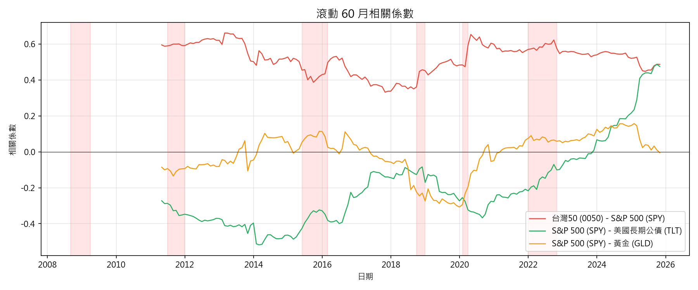
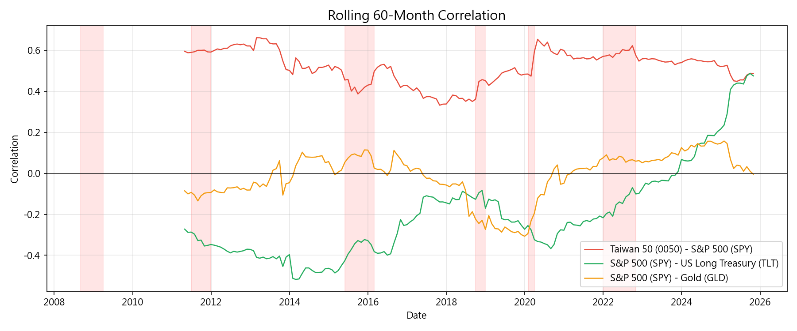
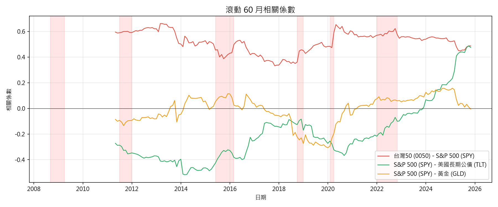
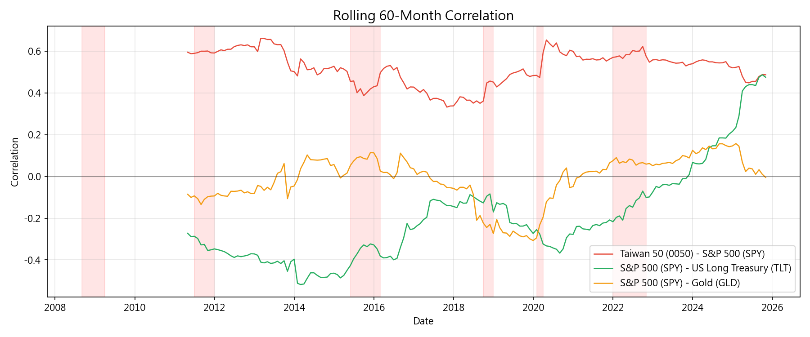

附錄Appendix
本附錄收錄完整的數據表格、統計檢定結果和補充圖表。這些資料為正文的結論提供詳細的數據支撐。建議讀者在閱讀正文時遇到想確認的具體數字，可以回到此處查找。
This appendix contains complete data tables, statistical test results, and supplementary charts. These materials provide detailed data support for the main text conclusions. Readers can refer back here when seeking specific numbers mentioned in the main text.
A.1 各資產描述統計A.1 Asset Descriptive Statistics
下表為各資產在分析期間的完整統計摘要（台幣計價月報酬）。所有數值均基於月報酬率計算。如何閱讀此表：ann_return 為年化報酬率，ann_volatility 為年化波動度（越低越穩定），sharpe_ratio 為夏普比率（越高代表每單位風險獲得的報酬越多），max_drawdown 為最大回撤（越接近 0% 越好），cvar_5 為最差 5% 情境的平均月損失，skewness 為偏態（負值代表左尾較厚、極端虧損更頻繁），kurtosis 為峰態（大於 3 代表厚尾、極端事件多於常態分佈）。
Complete statistical summary of each asset (TWD-denominated monthly returns). All values computed from monthly returns. How to read: ann_return = annualized return; ann_volatility = annualized volatility (lower = more stable); sharpe_ratio = Sharpe ratio (higher = more return per unit risk); max_drawdown = maximum drawdown (closer to 0% is better); cvar_5 = average monthly loss in worst 5% scenarios; skewness = distribution skew (negative = fatter left tail, more frequent extreme losses); kurtosis = distribution tail thickness (above 3 = fat tails, more extreme events than normal distribution).
| label | ann_return | ann_volatility | sharpe_ratio | max_drawdown | cvar_5 | skewness | kurtosis |
|---|---|---|---|---|---|---|---|
| 0050 | 11.92% | 18.78% | 0.63 | -53.93% | -11.94% | -0.20 | 1.01 |
| SPY | 10.51% | 14.08% | 0.75 | -46.99% | -8.31% | -0.42 | 0.91 |
| TLT | 3.23% | 14.81% | 0.22 | -42.07% | -7.63% | 0.69 | 1.87 |
| GLD | 8.95% | 16.53% | 0.54 | -37.39% | -8.95% | 0.08 | 0.16 |
| VNQ | 5.63% | 21.13% | 0.27 | -66.34% | -14.07% | -0.60 | 4.69 |
A.2 投資組合績效彙整A.2 Portfolio Performance Summary
七個投資組合的全期間績效指標比較（年度再平衡、台幣計價）。此表是選擇「最適合自己」的投資組合的關鍵參考。建議讀者不要只看報酬率（ann_return）——同時關注波動度（ann_volatility）和最大回撤（max_drawdown），因為這些直接影響你在投資過程中的心理感受。一個年化少賺 1% 但最大回撤少 10% 的組合，對大多數人而言是更好的選擇。
Full-period performance metrics for seven portfolios (annual rebalancing, TWD-denominated). This table is the key reference for choosing the "best-fit" portfolio. Don't focus solely on returns (ann_return) — also consider volatility (ann_volatility) and max drawdown (max_drawdown), as these directly affect your psychological experience during investing. A portfolio earning 1% less annually but with 10% less max drawdown is likely the better choice for most people.
| label | label_zh | ann_return | ann_volatility | sharpe_ratio | max_drawdown | cvar_5 |
|---|---|---|---|---|---|---|
| tw_only | 100% 台股 | 11.92% | 18.78% | 0.63 | -53.93% | -11.94% |
| us_only | 100% 美股 | 10.51% | 14.08% | 0.75 | -46.99% | -8.31% |
| tw_us | 台股60/美股40 | 11.61% | 15.14% | 0.77 | -49.66% | -10.09% |
| stock_bond | 股60/債40 | 8.46% | 9.73% | 0.87 | -18.33% | -5.53% |
| three_way | 三分法(股/債/金) | 8.54% | 9.27% | 0.92 | -14.30% | -4.81% |
| five_asset | 五資產等權 | 9.19% | 9.97% | 0.92 | -24.19% | -5.73% |
| practical | 實務配置 | 10.13% | 10.69% | 0.95 | -30.33% | -6.61% |
A.3 統計檢定彙整A.3 Statistical Tests Summary
所有假說檢定結果，含效果量與信賴區間。如何閱讀此表：「p-value」越小代表結果越不可能是偶然（通常 <0.05 視為統計顯著）；「effect_size」衡量差異的實際大小（有些差異雖然統計顯著，但實際影響很小）；「CI」為 95% 信賴區間，代表如果重複這個實驗 100 次，約有 95 次的結果會落在這個範圍內。信賴區間越窄，代表我們對估計結果越有信心。
All hypothesis test results with effect sizes and confidence intervals. How to read: "p-value": smaller means less likely due to chance (typically <0.05 is statistically significant); "effect_size": measures practical magnitude (some differences are statistically significant but practically small); "CI": 95% confidence interval — if we repeated this experiment 100 times, ~95 results would fall in this range. Narrower CI means higher confidence in our estimate.
| hypothesis | test | statistic | p_value | effect_size | ci_95 | conclusion |
|---|---|---|---|---|---|---|
| H1: Diversification Effect | Bootstrap MaxDD diff: five_asset vs 0050 | 29.7% | 1.000000 | d=3.39 | [9.4%, 43.0%] | Not significant |
| H1: Diversification Effect | Bootstrap MaxDD diff: five_asset vs SPY | 22.8% | 0.979500 | d=3.08 | [0.6%, 30.1%] | Not significant |
| H1: Diversification Effect | Bootstrap MaxDD diff: five_asset vs TLT | 17.9% | 0.954200 | d=1.40 | [-3.2%, 47.4%] | Not significant |
| H1: Diversification Effect | Bootstrap MaxDD diff: five_asset vs GLD | 13.2% | 0.865900 | d=1.18 | [-8.0%, 35.8%] | Not significant |
| H1: Diversification Effect | Bootstrap MaxDD diff: five_asset vs VNQ | 42.2% | 0.999900 | d=3.34 | [9.6%, 57.3%] | Not significant |
| H2: Correlation Structure Change | Fisher z-transform (0/10 pairs significant) | mean z=-0.05 | 0.076366 | mean r_diff=-0.031 | - | 0/10 pairs show significant correlation increase in crisis |
| H3: Diminishing Marginal Benefit | NLS fit: sigma(N) = sigma_sys + sigma_idio/sqrt(N) | R2=0.9985 | - | sigma_sys=12.9%, sigma_idio=12.4% | - | Strong fit confirms diminishing marginal benefit |
A.4 相關矩陣A.4 Correlation Matrix
全期間相關係數熱力圖與滾動相關係數的靜態版本。熱力圖呈現全期間的「平均」相關結構，而滾動相關圖則揭示這個相關結構如何隨時間變化。兩者搭配閱讀才能獲得完整的圖景：全期間的相關性告訴你「長期而言，這些資產傾向如何互動」，滾動相關性則告訴你「這種互動關係是否穩定，還是在不同時期差異很大」。
Full-period correlation heatmap and static version of rolling correlations. The heatmap shows the "average" correlation structure, while the rolling chart reveals how this structure changes over time. Read both together for the complete picture: full-period correlation tells you "in the long run, how do these assets interact?" while rolling correlation tells you "is this interaction stable, or does it vary significantly across periods?"

 

A.5 補充圖表A.5 Supplementary Charts
以下為正文中互動圖表的靜態版本，以及額外的風險比較圖。靜態版本適合列印或在不支援 JavaScript 的環境中閱讀。投資組合累積報酬圖呈現七個組合的長期成長軌跡，而風險指標比較圖以三個維度同時展示各組合的風險輪廓。
Below are static versions of interactive charts from the main text, plus additional risk comparison charts. Static versions are suitable for printing or environments without JavaScript. The portfolio cumulative chart shows long-term growth trajectories of seven portfolios, while the risk metrics comparison chart displays each portfolio's risk profile across three dimensions simultaneously.